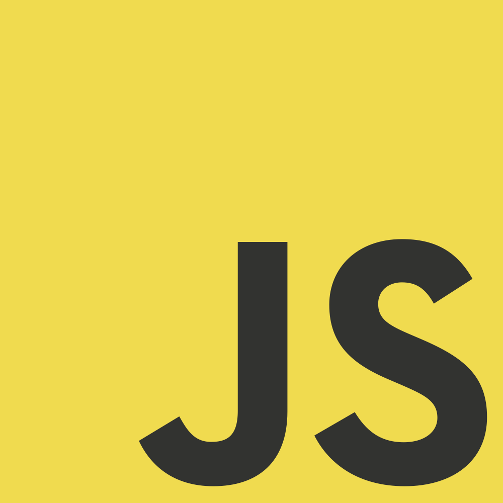

Gaming

Gaming on Linux can be very good with services like Steam and tools like WINE.
While thousands of games on steam right now support Linux there are many that don't, a lot of these are able to be ran in WINE but this is not a perfect solution.

Everyday Use

For everyday use like browsing the web, checking email or enjoying multimedia Linux is a great alternative to Windows or Mac. All of the apps you may need for these tasks and more is available on Linux.

Coding
Linux is a very good enviroment for coding and has many free and non free tools for writing code.


However, you will most likely NOT be able to use tools made by Adobe like Dreamweaver, or Flash. Flash content is supported in browsers on Linux.
Linux can also be a powerful tool to learn for development since many servers run Linux.